Create your first dashboard
editCreate your first dashboard
editLearn the most common ways to create a dashboard from your own data. The tutorial will use sample data from the perspective of an analyst looking at website logs, but this type of dashboard works on any type of data.
When you’re done, you’ll have a complete overview of the sample web logs data.
Before you begin, you should be familiar with the Kibana concepts.
Add the data and create the dashboard
editAdd the sample web logs data, and create and set up the dashboard.
- On the home page, click Try sample data.
- Click Other sample data sets.
- On the Sample web logs card, click Add data.
Create the dashboard where you’ll display the visualization panels.
- Open the main menu, then click Dashboard.
- Click Create dashboard.
- Set the time filter to Last 90 days.
Open the visualization editor and get familiar with the data
editOpen the visualization editor, then make sure the correct fields appear.
- On the dashboard, click Create visualization.
-
Make sure the Kibana Sample Data Logs data view appears.
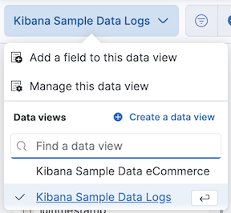
To create the visualizations in this tutorial, you’ll use the following fields:
- Records
- timestamp
- bytes
- clientip
- referer.keyword
To see the most frequent values in a field, hover over the field name, then click i.
Create your first visualization
editPick a field you want to analyze, such as clientip. To analyze only the clientip field, use the Metric visualization to display the field as a number.
The only number function that you can use with clientip is Unique count, also referred to as cardinality, which approximates the number of unique values.
-
Open the Visualization type dropdown, then select Metric.
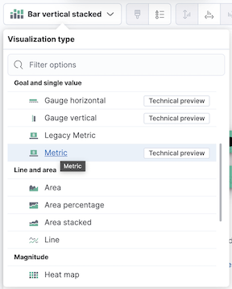 -
From the Available fields list, drag clientip to the workspace or layer pane.

In the layer pane, Unique count of clientip appears because the editor automatically applies the Unique count function to the clientip field. Unique count is the only numeric function that works with IP addresses.
-
In the layer pane, click Unique count of clientip.
-
In the Name field, enter
Unique visitors. - Click Close.
-
In the Name field, enter
-
Click Save and return.
[No Title] appears in the visualization panel header. Since the visualization has its own
Unique visitorslabel, you do not need to add a panel title.
View a metric over time
editThere are two shortcuts you can use to view metrics over time. When you drag a numeric field to the workspace, the visualization editor adds the default time field from the data view. When you use the Date histogram function, you can replace the time field by dragging the field to the workspace.
To visualize the bytes field over time:
- On the dashboard, click Create visualization.
-
From the Available fields list, drag bytes to the workspace.
The visualization editor creates a bar chart with the timestamp and Median of bytes fields.
-
To zoom in on the data, click and drag your cursor across the bars.
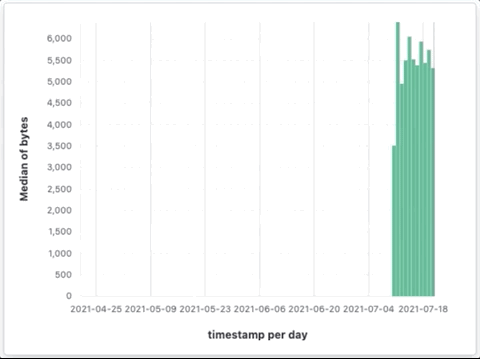
To emphasize the change in Median of bytes over time, change the visualization type to Line with one of the following options:
- In the Suggestions, click the line chart.
- In the editor toolbar, open the Visualization type dropdown, then select Line.
- In the layer pane, open the Layer visualization type menu, then click Line.
To increase the minimum time interval:
- In the layer pane, click timestamp.
-
Change the Minimum interval to 1d, then click Close.
You can increase and decrease the minimum interval, but you are unable to decrease the interval below the configured Advanced Settings.
To save space on the dashboard, hide the axis labels.
-
Open the Left axis menu, then select None from the Axis title dropdown.
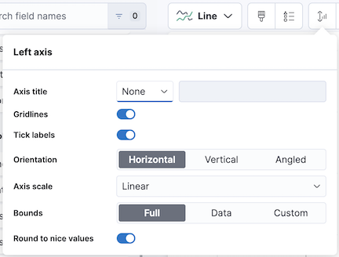 -
Open the Bottom axis menu, then select None from the Axis title dropdown.
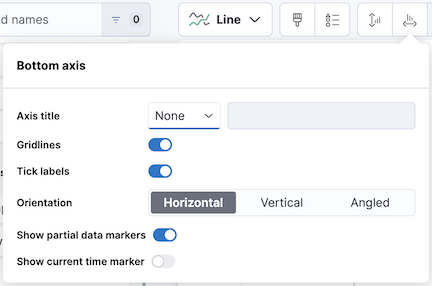 - Click Save and return
Since you removed the axis labels, add a panel title:
- Open the panel menu, then select Panel settings.
-
In the Title field, enter
Median of bytes, then click Save.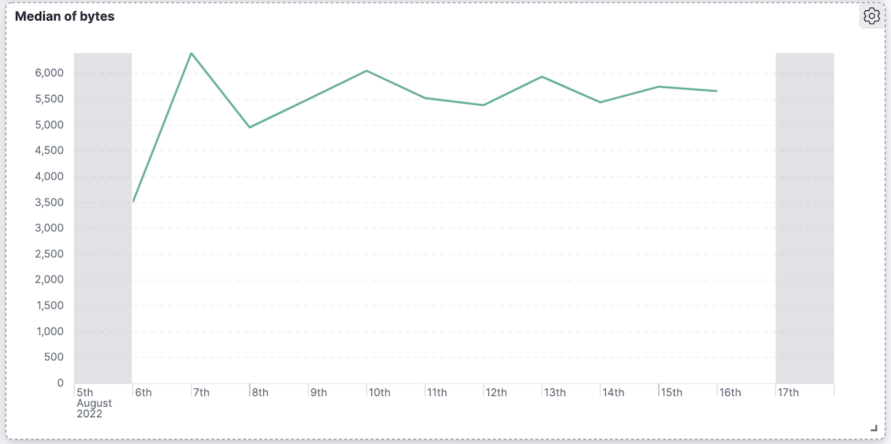
View the top values of a field
editCreate a visualization that displays the most frequent values of request.keyword on your website, ranked by the unique visitors. To create the visualization, use Top values of request.keyword ranked by Unique count of clientip, instead of being ranked by Count of records.
The Top values function ranks the unique values of a field by another function. The values are the most frequent when ranked by a Count function, and the largest when ranked by the Sum function.
- On the dashboard, click Create visualization.
-
From the Available fields list, drag clientip to the Vertical axis field in the layer pane.
The visualization editor automatically applies the Unique count function. If you drag clientip to the workspace, the editor adds the field to the incorrect axis.
-
Drag request.keyword to the workspace.
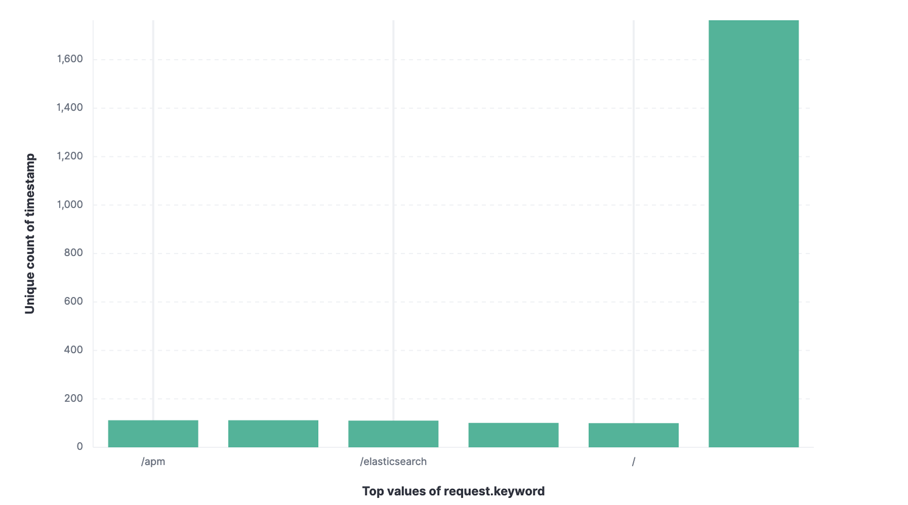When you drag a text or IP address field to the workspace, the editor adds the Top values function ranked by Count of records to show the most frequent values.
The chart labels are unable to display because the request.keyword field contains long text fields. You could use one of the Suggestions, but the suggestions also have issues with long text. The best way to display long text fields is with the Table visualization.
-
Open the Visualization type dropdown, then select Table.
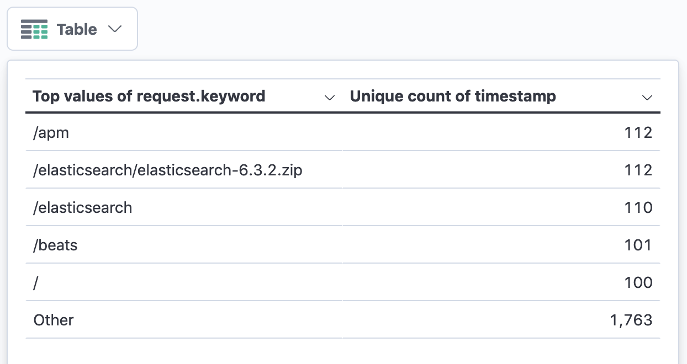 -
In the layer pane, click Top 5 values of request.keyword.
-
In the Number of values field, enter
10. -
In the Name field, enter
Page URL. -
Click Close.
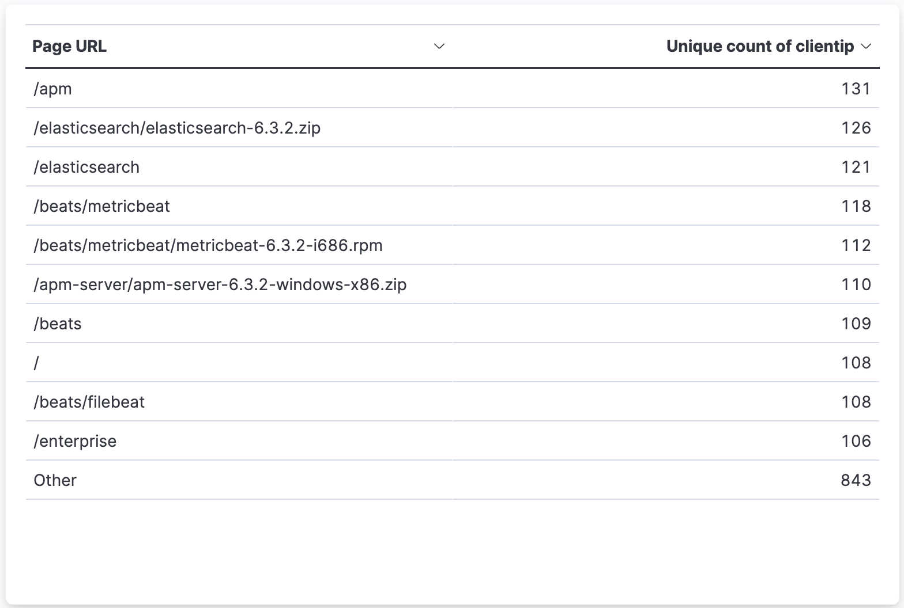
-
In the Number of values field, enter
-
Click Save and return.
Since the table columns are labeled, you do not need to add a panel title.
Compare a subset of documents to all documents
editCreate a proportional visualization that helps you determine if your users transfer more bytes from documents under 10KB versus documents over 10Kb.
- On the dashboard, click Create visualization.
- From the Available fields list, drag bytes to the Vertical axis field in the layer pane.
- In the layer pane, click Median of bytes.
- Click the Sum quick function, then click Close.
- From the Available fields list, drag bytes to the Break down by field in the layer pane.
To select documents based on the number range of a field, use the Intervals function. When the ranges are non numeric, or the query requires multiple clauses, you could use the Filters function.
Specify the file size ranges:
- In the layer pane, click bytes.
-
Click Create custom ranges, enter the following in the Ranges field, then press Return:
-
Ranges —
0→10240 -
Label —
Below 10KB
-
Ranges —
-
Click Add range, enter the following, then press Return:
-
Ranges —
10240→+∞ -
Label —
Above 10KB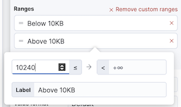
-
Ranges —
- From the Value format dropdown, select Bytes (1024), then click Close.
To display the values as a percentage of the sum of all values, use the Pie chart.
-
Open the Visualization Type dropdown, then select Pie.
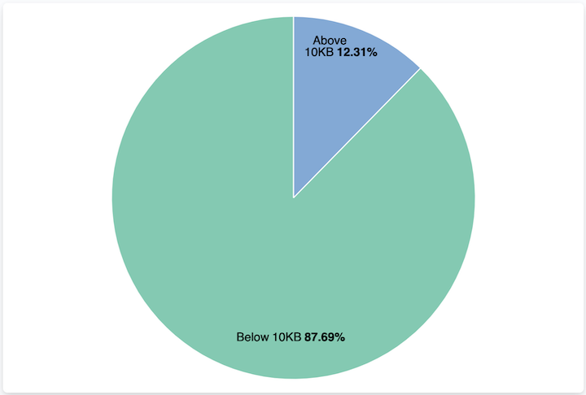 - Click Save and return.
Add a panel title:
- Open the panel menu, then select Panel settings.
-
In the Title field, enter
Sum of bytes from large requests, then click Save.
View the distribution of a number field
editThe distribution of a number can help you find patterns. For example, you can analyze the website traffic per hour to find the best time for routine maintenance.
- On the dashboard, click Create visualization.
- From the Available fields list, drag bytes to Vertical axis field in the layer pane.
-
In the layer pane, click Median of bytes.
- Click the Sum quick function.
-
In the Name field, enter
Transferred bytes. - From the Value format dropdown, select Bytes (1024), then click Close.
- From the Available fields list, drag hour_of_day to Horizontal axis field in the layer pane.
-
In the layer pane, click hour_of_day, then slide the Intervals granularity slider until the horizontal axis displays hourly intervals.

- Click Save and return.
Add a panel title:
- Open the panel menu, then select Panel settings.
-
In the Title field, enter
Website traffic, then click Save.
Create a multi-level chart
editTable and Proportion visualizations support multiple functions. For example, to create visualizations that break down the data by website traffic sources and user geography, apply the Filters and Top values functions.
- On the dashboard, click Create visualization.
- Open the Visualization type dropdown, then select Treemap.
- From the Available fields list, drag Records to the Size by field in the layer pane.
- In the layer pane, click Add or drag-and-drop a field for Group by.
Create a filter for each website traffic source:
- Click Filters.
-
Click All records, enter the following in the query bar, then press Return:
-
KQL —
referer : *facebook.com* -
Label —
Facebook
-
KQL —
-
Click Add a filter, enter the following in the query bar, then press Return:
-
KQL —
referer : *twitter.com* -
Label —
Twitter
-
KQL —
-
Click Add a filter, enter the following in the query bar, then press Return:
-
KQL —
NOT referer : *twitter.com* OR NOT referer: *facebook.com* -
Label —
Other
-
KQL —
- Click Close.
Add the user geography grouping:
- From the Available fields list, drag geo.srcdest to the workspace.
-
To change the Group by order, drag Top 3 values of geo.srcdest in the layer pane so that appears first.
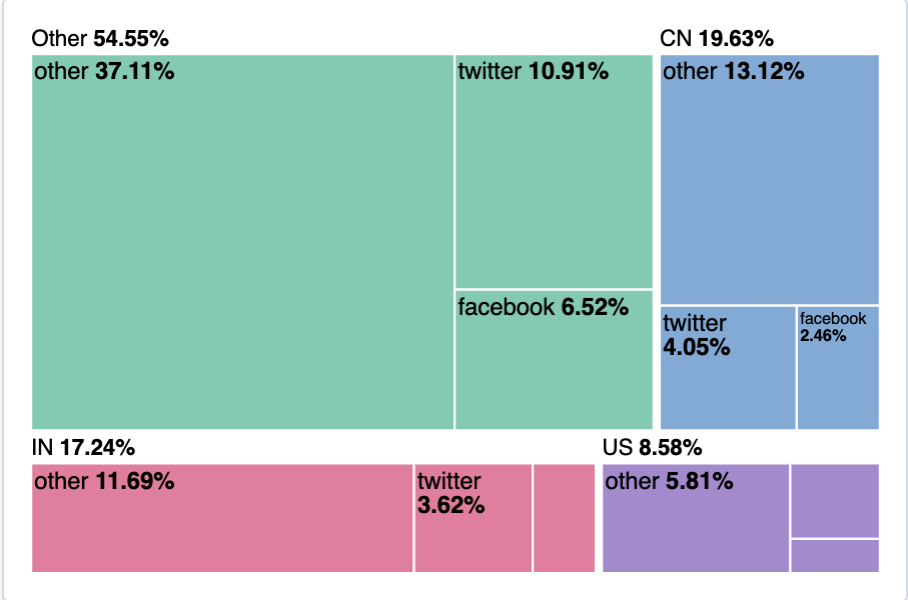
Remove the documents that do not match the filter criteria:
- In the layer pane, click Top 3 values of geo.srcdest.
-
Click Advanced, deselect Group other values as "Other", then click Close.
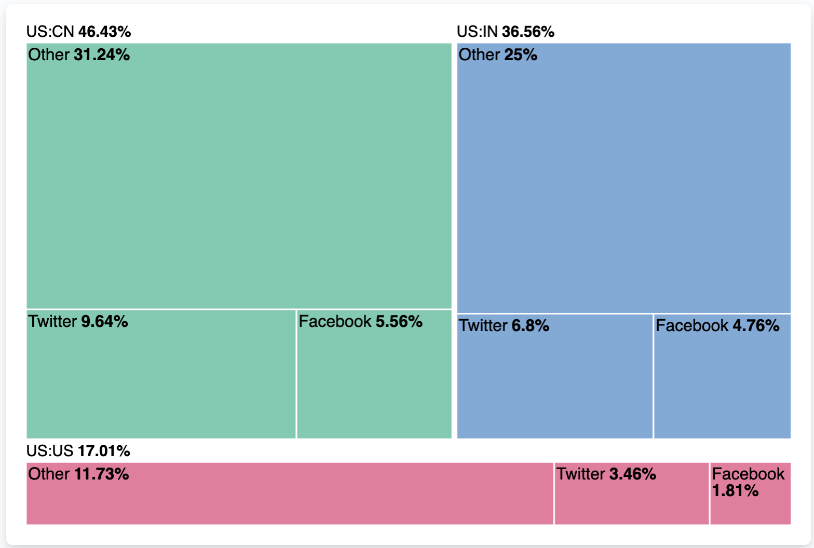 - Click Save and return.
Add a panel title:
- Open the panel menu, then select Panel settings.
-
In the Title field, enter
Page views by location and referrer, then click Save.
Arrange the dashboard panels
editResize and move the panels so they all appear on the dashboard without scrolling.
Decrease the size of the following panels, then move the panels to the first row:
- Unique visitors
- Median of bytes
- Sum of bytes from large requests
-
Website traffic
Save the dashboard
editNow that you have a complete overview of your web server data, save the dashboard.
- In the toolbar, click Save.
-
On the Save dashboard window, enter
Logs dashboardin the Title field. - Select Store time with dashboard.
- Click Save. You will be identified as the creator of the dashboard. If you or another user edit the dashboard, you can also view the last editor when checking the dashboard information.